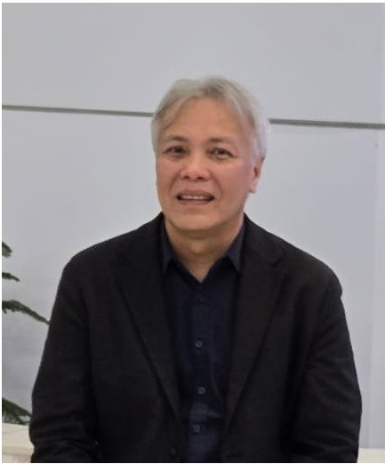

President Director
M. Syukri Fitrialdi
M. Syukri Fitrialdi was born in Padang in 1968. He earned both his bachelor's and master's degrees from Institut Teknologi Bandung (ITB). Known for his intelligence, professionalism, and sense of humor, he has built more than two decades of experience in geotechnical and geohydrological work, deep water well drilling, deep exploratory drilling, water well drilling and pumping, and onshore, offshore, and nearshore geotechnical investigation.